Serverless Ebook Menggunakan Honkit, Github Pages, Github Action dan Calibre
Tutorial kali ini kita akan membuat sebuah instance ebook menggunakan Github, kemudian di publish ke Github Pages secara otomatis setiap kali kita melakukan push yang di manajemen oleh Github Action, dan melakukan deploy web, serta file (.pdf, .epub, .mobi).
Ebook ini adalah contohnya!
Setiap kali melakukan push, Github Action (CI/CD) akan melakukan trigger (compile website dan membuat ebook), yang kemudian menghasilkan gh-pages branch yang aksesnya akan dibuat publik.
1. Prasyarat
1.1. Honkit
Memasang Honkit (pastikan kalian memiliki nodejs), untuk langkahnya bisa mengunjungi (https://github.com/honkit/honkit)
1.2. Akun Github
Pastikan memiliki akun Github, apabila belum silahkan mendaftar di (https://github.com/signup)
1.3. Git Klien
Pastikan memiliki Git klien, apabila belum silahkan mengunduh di (https://git-scm.com/)
2. Panduan
2.1. Membuat Repository Github
Pertama buat repository Github baru di akun Githubmu, bebas mau publik ataupun pribadi. Untuk tutorial ini saya memilih ebook-example sebagai nama repository.
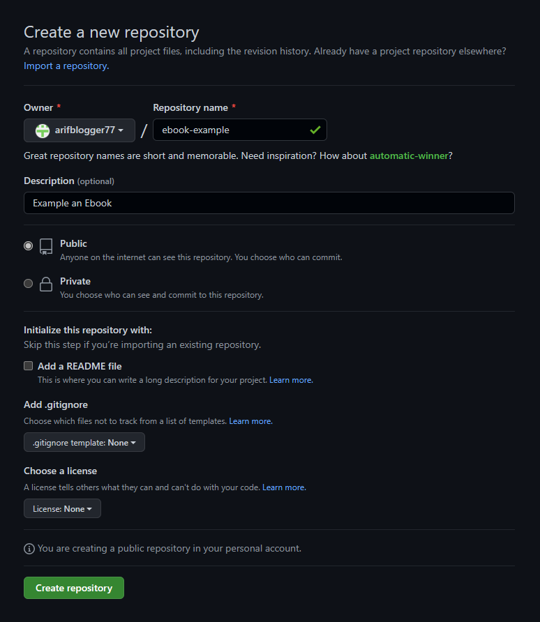
2.2. Membuat Honkit Project Baru
Kemudian gunakan perintah honkit untuk menginisiasi projek baru. Disini saya menamakannya ebook-example, sama seperti nama repositorinya.
mkdir ebook-example
cd ebook-example
npm init --yes
npm install honkit --save-dev # apabila tidak menginstall secara global
npx honkit init
npx honkit serve
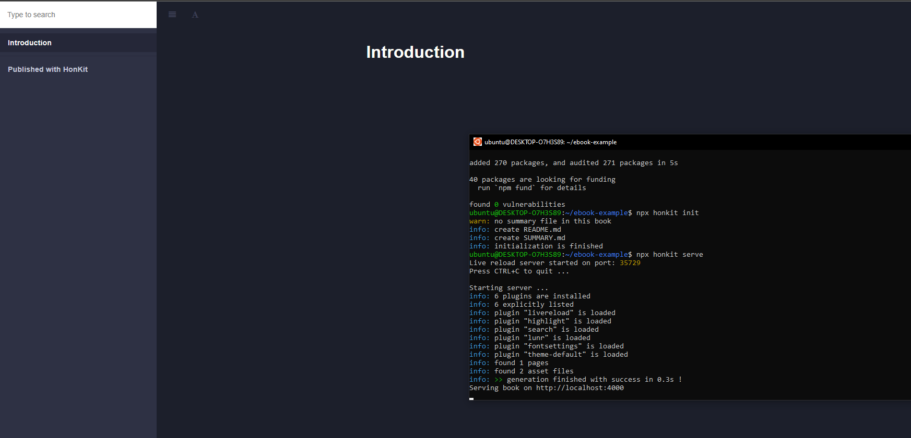 Sama seperti gambar di atas, versi web dari ebook telah berjalan.
2.3. Menyiapkan SSH Github Deploy Key
Kemudian kita akan menggunakan plugin Github Action dari (https://github.com/peaceiris/actions-gh-pages) agar otomatis push dari repository Github ke gh-pages branch.
Untuk mencoba skenario tersebut, pertama generate sepasang kunci SSH menggunakan perintah ssh-keygen di bawah ini. Kunci tersebut akan digunakan untuk sebagai Github deploy key.
Pastikan sudah melakukan konfigurasi
git config user.emailPastikan projek sudah di
git init
ssh-keygen -t rsa -b 4096 -C "$(git config user.email)" -f gh-pages -N ""
# Akan ada 2 file:
# gh-pages.pub (public key)
# gh-pages (private key)
Perintah di atas akan membuat 2 file:
gh-pages.pubfile adalah key publikgh-pagesfile adalah key pribadi
Unggah dua file itu ke dalam repository project keys dan secret. Untuk melakukannya, buka repository, klik Settings, kemudian ikuti langkah di bawah ini.
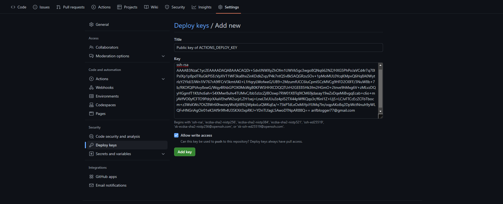
Key Publik
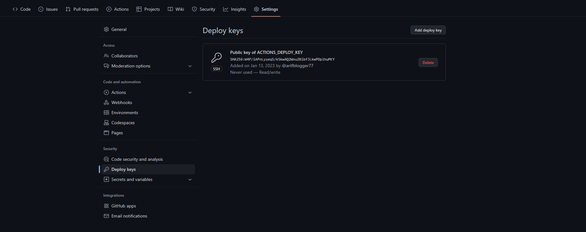
Key Publik Sukses
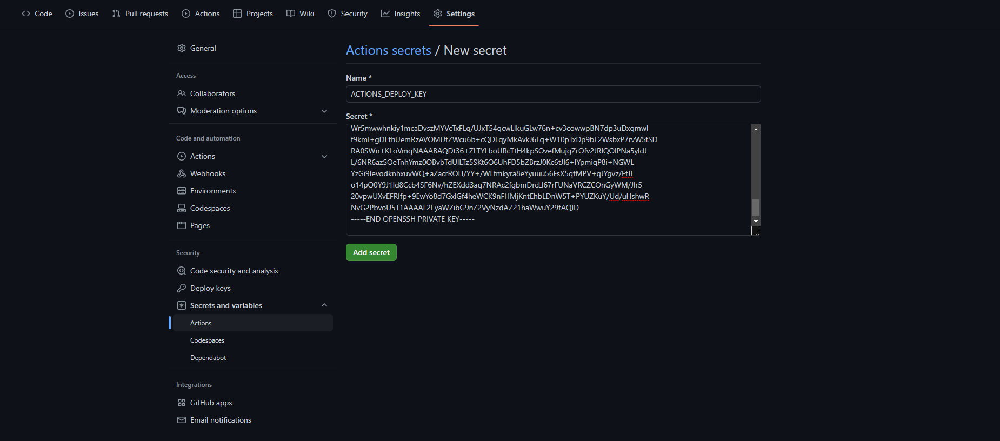
Key Pribadi
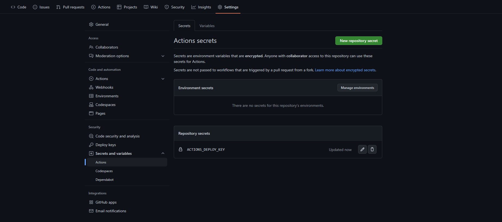
Key Pribadi Sukses
2.4. Membuat File Alur Kerja Github CI/CD Untuk Membuat Ebook Versi Web
Sekarang kita akan membuat Github otomatis deploy ebook versi web setiap kali ada push. Kita akan mengaplikasikannya pada push yang pertama.
Buat alur kerja baru dengan nama gh-pages.yml yang berada di <yourproject>/.github/workflows, kemudian tulis konfigurasi seperti di bawah ini:
# file ./ebook-example/.github/workflows/gh-pages.yml
name: 'deploy webiste and ebooks'
on:
push:
branches:
- main # branch name to trigger deployment
jobs:
job_deploy_website:
name: 'deploy website'
runs-on: ubuntu-latest
steps:
- uses: actions/checkout@v3
with:
submodules: true # Fetch Hugo themes (true OR recursive)
fetch-depth: 0 # Fetch all history for .GitInfo and .Lastmod
- name: Setup Node
uses: actions/setup-node@v3
with:
node-version: 16
- name: Installing
run: npm install honkit --save-dev
- name: Build
run: |
npx honkit build
# cp ./CNAME _book/CNAME
- name: Deploy
uses: peaceiris/actions-gh-pages@v3
# If you're changing the branch from main,
# also change the `main` in `refs/heads/main`
# below accordingly.
with:
deploy_key: ${{ secrets.ACTIONS_DEPLOY_KEY }}
publish_dir: ./_book
Secara garis besar, workflow diatas akan melakukan:
- Trigger workflow setiap kali ada push di branch
main - Menginstall
node js - Menginstall
honkit - Membuild projek
- Menggunakan plugin
peaceiris/actions-gh-pagesuntuk deploy ke branchgh-pages.
2.5. Push Projek Ke Repositori Github
# Pastikan lokasi di ./ebook-example
# Mengabaikan beberapa direktori
touch .gitignore
echo '_book' >> .gitignore
echo 'node_modules' >> .gitignore
echo 'gh-pages' >> .gitignore
echo 'gh-pages.pub' >> .gitignore
# Inisiasi repositori git
git init
git add .
git commit -m "init"
git branch -M main
git remote add origin https://github.com/arifblogger77/ebook-example.git
# Push
git push -u origin main
Kembali ke browser, buka repositori Githubmu, klik Actions lihat proses workflow yang berjalan.
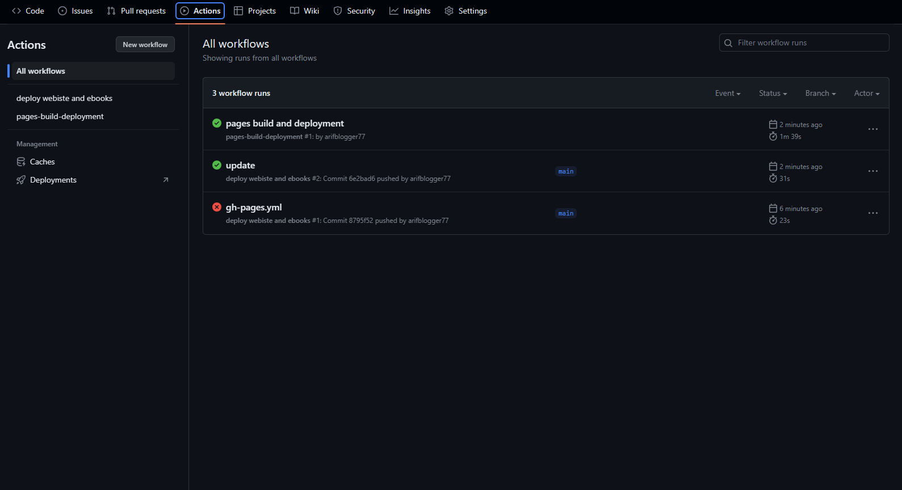
Setelah workflow selesai, kemudian buka di browser mengikuti URL berikut.
# https://<github-username>.github.io/<repo-name>
https://arifblogger77.github.io/ebook-example
Jika masih ragu apakah URL tersebut benar, buka menu Settings kemudian pilih Pages dan klik Visit site

2.6 Memodifikasi Workflow Agar Menghasilkan File Ebook
Kita akan memodifikasi workflow agar bisa menghasilkan file ebook (.pdf, .epub, .mobi).
Buka kembali file gh-pages.yml, kemudian tambahkan job job_deploy_ebooks.
Sebelum itu kita perlu melakukan setting EBOOK_NAME terlebih dahulu. Buka Settings pilih Secrets and variables kemudian pilih Actions, klik tab Variables dan klik New repository variable.
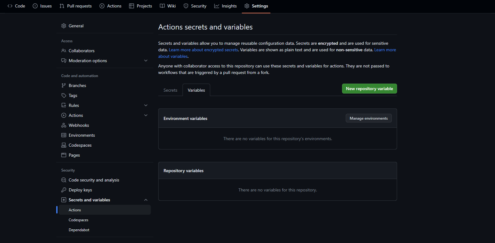
Contoh pengisian seperti berikut ini 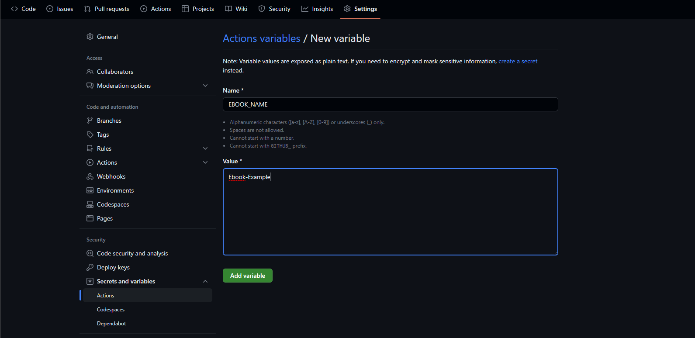
Selanjutnya pada bagian yang Environtment variable klik Manage environtments
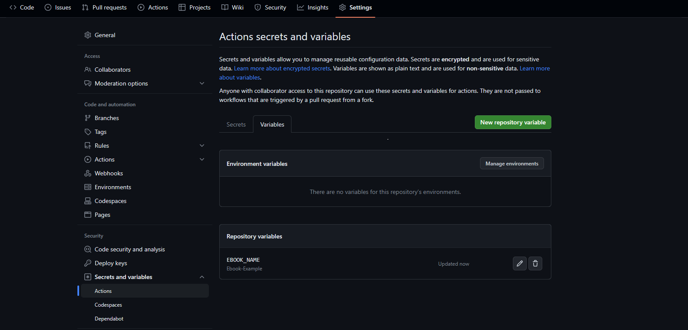
Klik github-pages pada halaman Environtments
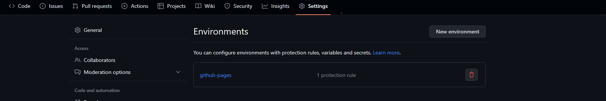
Lakukan pengisian seperti berikut 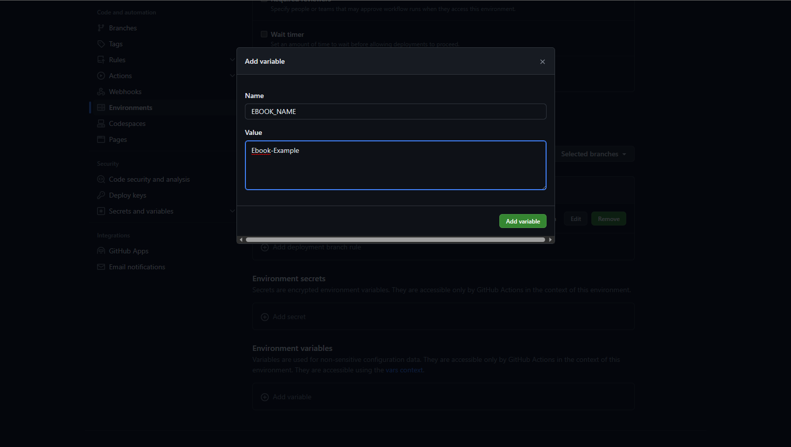
# file ./ebook-example/.github/workflows/gh-pages.yml
name: 'deploy webiste and ebooks'
on:
push:
branches:
- main # branch name to trigger deployment
jobs:
job_deploy_website:
# ...
job_deploy_ebooks:
name: 'deploy ebooks'
runs-on: ubuntu-latest
steps:
- uses: actions/checkout@v3
with:
submodules: true # Fetch Hugo themes (true OR recursive)
fetch-depth: 0 # Fetch all history for .GitInfo and .Lastmod
- name: Setup Node
uses: actions/setup-node@v3
with:
node-version: 16
- name: Installing
run: npm install honkit --save-dev
- name: Installing Prerequisite
run: |
npm install honkit --save-dev
sudo apt-get update
sudo apt-get install -y libgl1-mesa-glx
sudo apt-get install -y ocl-icd-opencl-dev
- name: 'Installing calibre'
run: |
sudo -v
wget -nv -O- https://download.calibre-ebook.com/linux-installer.sh | sudo sh /dev/stdin
- name: 'Preparing for ebooks generations'
run: |
npx honkit build
- name: 'Make folder ebooks'
run: |
cd _book
mkdir ebooks
ls -a
cd ../
- name: 'Generating ebook in pdf'
run: npx honkit pdf ./ ./_book/ebooks/ebook${{ env.EBOOK_NAME }}.pdf
- name: 'Generating ebook in epub'
run: npx honkit epub ./ ./_book/ebooks/ebook${{ env.EBOOK_NAME }}.epub
- name: 'Generating ebook in mobi'
run: npx honkit mobi ./ ./_book/ebooks/ebook${{ env.EBOOK_NAME }}.mobi
- name: Deploy
uses: peaceiris/actions-gh-pages@v3
# If you're changing the branch from main,
# also change the `main` in `refs/heads/main`
# below accordingly.
with:
deploy_key: ${{ secrets.ACTIONS_DEPLOY_KEY }}
publish_dir: ./_book
job_deploy_website akan menghasilkan ebook berbasis website, sedangkan job_deploy_ebooks menghasilkan ebook berupa file seperti .pdf, .mobi, .epub. Proses tersebut dibantu oleh Calibre.
Baik, selanjutnya kita push lagi.
git add .
git commit -m "update"
git push origin main
Kita lihat kembali di Actions sekarang ada job deploy ebooks
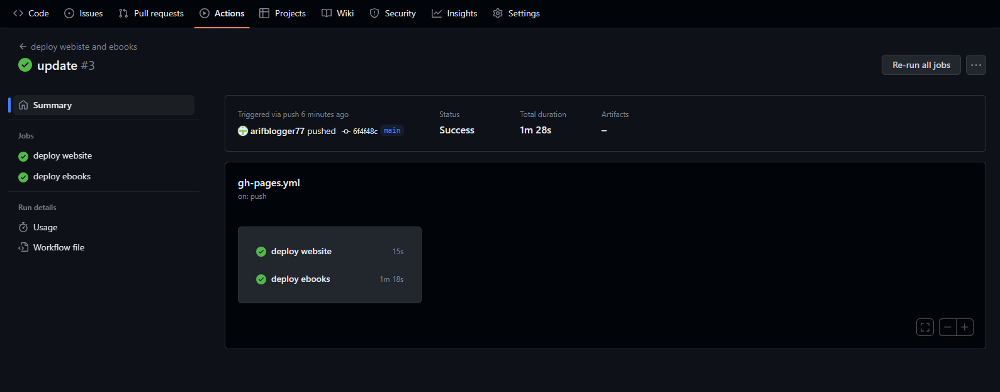
Hasil dari file ebooknya bisa kita lihat di folder ebook
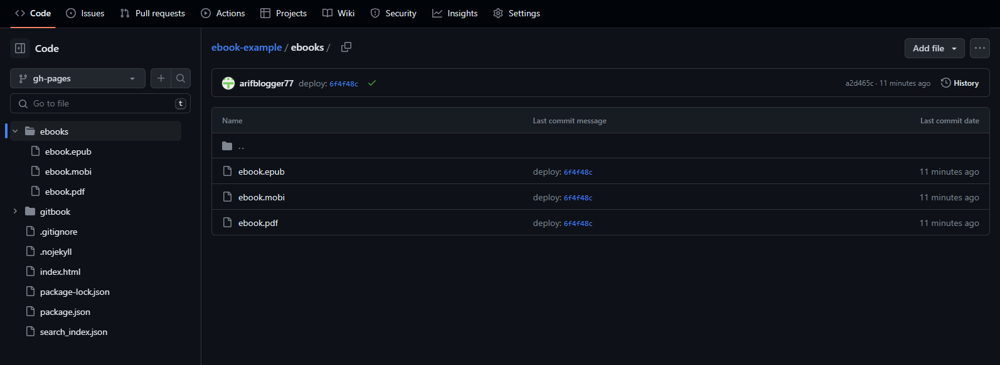
Untuk direct download mengikuti format URL di bawah ini
https://raw.githubusercontent.com/<yourusername>/<yourrepo>/<yourbranch>/<yourfolder>/<file>.<extension>
https://raw.githubusercontent.com/arifblogger77/ebook-example/gh-pages/ebooks/ebook.pdf
https://raw.githubusercontent.com/arifblogger77/ebook-example/gh-pages/ebooks/ebook.mobi
https://raw.githubusercontent.com/arifblogger77/ebook-example/gh-pages/ebooks/ebook.epub
2.7 Menambahkan Domain Kustom
Bersifat opsional namun penting, Oke. Mari mencoba menambahkan kustom domain ke Github Pages. Silahkan kalian buka Control Panel domain kalian, tambahkan CNAME baru yang terhubung ke Github page domain <github-username>.github.io.
Name: ebook.krearive.com
Value: arifblogger77.github.io
Selanjutnya kita buat file bernama CNAME
echo 'ebook.krearive.com' > CNAME
File CNAME harus di copy ke _book agar ikut ke branch gh-pages. Caranya cukup uncomment cp ./CNAME _book/CNAME
# file ./ebook-example/.github/workflows/gh-pages.yml
name: 'deploy webiste and ebooks'
on:
push:
branches:
- main # branch name to trigger deployment
jobs:
job_deploy_website:
name: 'deploy website'
runs-on: ubuntu-latest
steps:
# ...
- name: Build
run: |
npx honkit build
cp ./CNAME _book/CNAME
- name: Deploy
# ...
Boom sekarang Github Pages sudah berubah menjadi domain kustom. 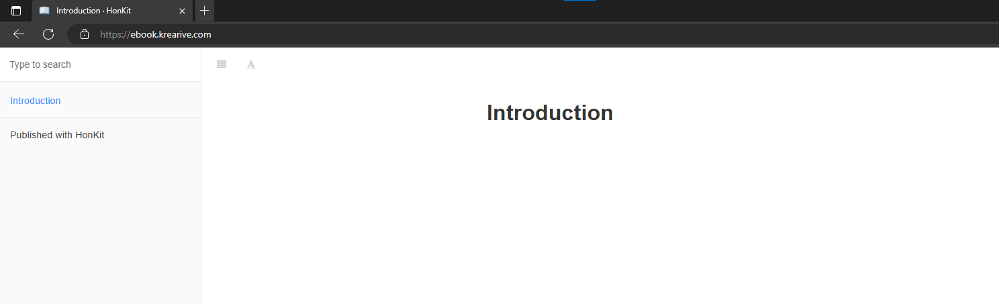
2.8 Aktifkan SSL/HTTPS di Github Page
Buka tab Settings pilih Pages dan centang Enforce HTTPS
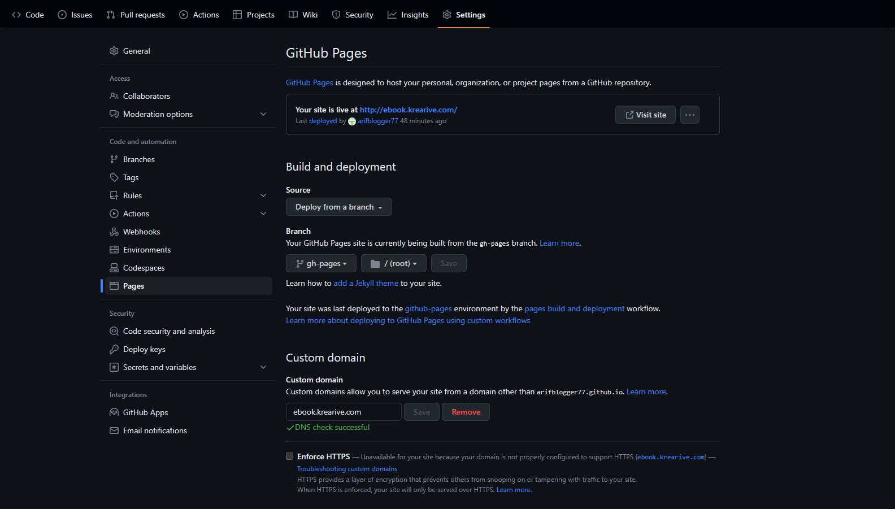